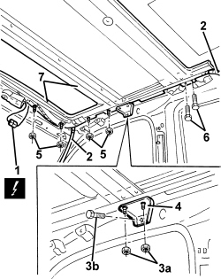

7030B10 SLIDING ROOF (ASSEMBLY) - R+R WITH ROOF PANEL REMOVED
- Path
- Procedures > 70 FITTINGS > 7030 SUN ROOF/GLASS PANEL > 7030B SLIDING ROOF > 7030B10 SLIDING ROOF (ASSEMBLY) - R+R WITH ROOF PANEL REMOVED
- Kind
- repair procedure (removal / refitting; the operation number is the code)
- Applies to
- all engines; all production periods
- Interactive page
- https://sloeber94.github.io/elrnDB/alfa/159/en/#/939004822
Applies to: all engines; all production periods
 Removing
Removing
 Refitting
Refitting- If possible, close the sliding sun roof.
1. Disconnect the electrical connection for the sun roof control unit.
Description | Component |
|---|---|
SUN ROOF COUPLING |
2. Disconnect the water drainage pipes on both sides of the vehicle.
3. Undo the nuts (3a) and the bolts (3b) for the side brackets.
4. Remove the brackets.
5. Undo the sun roof retaining nuts.
6. Undo the sun roof retaining bolts.
7. Remove the sun roof.

Applies to: all engines; all production periods
Refitting
Removing- Check that the sun roof components are not damaged.
- Place the sun roof in position.
- Tighten the nuts and the bolts securing the sun roof.
- Place the side brackets in position and secure them using the nuts and bolts.
- Connect the water drainage pipes.
- Connect the electrical connection for the motor.
- If necessary,
Op. 7030B17 SUN-ROOF GLASS - ALIGNMENT
- Check that the sun roof is working properly.